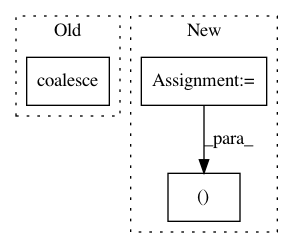

94c66f7bf013faf82184a1b8c3c61a17f5af3882,torch_geometric/transform/graclus.py,,cluster_adj,#Any#Any#,92
Before Change
weight = adj._values()
weight[row == col] = 0
adj = torch.sparse.FloatTensor(index, weight, torch.Size([n, n]))
return adj.coalesce()
def cluster_position(pos, cluster, singleton):
dim = pos.size(1)
After Change
row, col = adj._indices()
row, col = cluster[row], cluster[col]
weight = adj._values()
mask = row != col
row, col, weight = row[mask], col[mask], weight[mask]
index = torch.stack([row, col], dim=0)
adj = torch.sparse.FloatTensor(index, weight, torch.Size([n, n]))
return adj
In pattern: SUPERPATTERN
Frequency: 4
Non-data size: 3
Instances
Project Name: rusty1s/pytorch_geometric
Commit Name: 94c66f7bf013faf82184a1b8c3c61a17f5af3882
Time: 2017-11-03
Author: matthias.fey@tu-dortmund.de
File Name: torch_geometric/transform/graclus.py
Class Name:
Method Name: cluster_adj
Project Name: rusty1s/pytorch_geometric
Commit Name: 7f69a4ff73a73e4b2da4f554ee4640e185aa19a1
Time: 2018-05-20
Author: matthias.fey@tu-dortmund.de
File Name: test/utils/test_coalesce.py
Class Name:
Method Name: test_coalesce
Project Name: rusty1s/pytorch_geometric
Commit Name: b8f8a7876bdcbb05040350b2abb3486b5337b454
Time: 2019-08-04
Author: matthias.fey@tu-dortmund.de
File Name: torch_geometric/utils/get_laplacian.py
Class Name:
Method Name: get_laplacian
Project Name: rusty1s/pytorch_geometric
Commit Name: 62a05d5e2611f6ec8fda2c7d7c5b57cf8b64402b
Time: 2018-01-12
Author: matthias.fey@tu-dortmund.de
File Name: torch_geometric/nn/functional/pool/pool.py
Class Name:
Method Name: max_pool